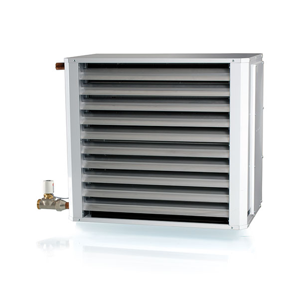

šildytuvai, ventiliatoriniai, vandeniniai, patalpoms „AW“ - NIT
 Patarimai Atlikti projektai Naujienos Apie mus Sprendimai Produktai Gamintojai Kontaktai E-parduotuvė Sprendimai Produktai Gamintojai Kontaktai E-parduotuvė Patarimai Atlikti projektai Naujienos Apie musPradžia Produktai Šildymo sistemos Šildytuvai AW
Vėdinimo sistemos Vėdinimo įrenginiai Hoval oro ruošimo įrenginiai Ortakiai (ventiliacijos) Ventiliacijos grotelės Oro difuzoriai Ugnies vožtuvai Oro užuolaidos Oro srauto valdymas Laboratorijų ir švarių patalpų įranga Ozonatorius Rekuperatoriai Mini rekuperatoriai Plokšteliniai rekuperatoriai Rotaciniai rekuperatoriai Ventiliatoriai Ašiniai ventiliatoriai Išcentriniai ventiliatoriai Kanaliniai ventiliatoriai Ištraukimo ventiliatoriai Oro kondicionieriai Mobilūs oro kondicionieriai MultiSplit oro kondicionieriai Split oro kondicionieriai Monoblokiai kondicionieriai VRF sistemos Vėsinimo sistemos Fankoilai Čileriai Šaldymo sijos Šaldymo lubos Oxycom vėsinimo sistemos Aušintuvės Kondensatoriai (aušinimo sistema) Preciziniai oro kondicionieriai Šilumos siurbliai Šilumos siurbliai (oras-vanduo) Šilumos siurbliai (oras-oras) Geoterminiai šilumos siurbliai (geoterminis šildymas) Automatika Pastatų valdymo sistemos ŠVOK sistemos, valdikliai Patalpų valdikliai Kambario termostatai Temperatūros davikliai Drėgmėmačiai ir drėgmės keitikliai Slėgio davikliai Srauto davikliai CO2/CO/NO2 davikliai LUX davikliai Rasos taško davikliai Dūmų detektoriai Dujų detektoriai Armatūra Vožtuvai ir pavaros Oro sklendžių pavaros Oro drėkintuvai Buitiniai oro drėkintuvai Pramoniniai oro drėkintuvai Drėgmės surinkėjai Buitiniai oro sausintuvai Pramoniniai oro sausintuvai Baseinų įranga Baseinų sausintuvai Baseinų vėdinimo sistemos Šildymo sistemos Spinduliniai šildytuvai Grindų šildymo sistemos Plokšteliniai šilumokaičiai Šildytuvai Elektriniai šildytuvai Vandeniniai šildytuvai Dujiniai šildytuvai Vamzdynų sistemos Oro filtravimo sistemos Oro filtrai Oro valytuvai Vietinio ištraukimo sistemos Dulkių bei atliekų siurbtuvai Dujų siurbtuvai Centriniai vakuuminiai siurbliai Centriniai vakuuminiai siurbliai namams Centriniai vakuuminiai siurbliai komercijai Centriniai vakuuminiai siurbliai pramonei Dezinfekavimas Oro dezinfekatoriaiŠildytuvai AW
PDF „AW“ specifikacija ENG Daugiau naudingų patarimų Kategorija: Šildymo sistemos Subkategorija: ŠildytuvaiVENTILIATORINIAI VANDENINIAI ŠILDYTUVAI „AW“
Ventiliatoriniai vandeniniai šildytuvai „AW“ naudojami nuolatiniam sandėlių, pramoninių patalpų, dirbtuvių, sporto salių, parduotuvių ir panašių patalpų šildymui.
Dėl savo patrauklaus dizaino ir paprastų, neprilygstamų linijų „AW“ šildytuvų serija taip pat gali būti įrengiama viešose patalpose.
Vandeniniai šildytuvai „AW“ gali būti papildyti pamaišymo sekcija, kuri tiekia gryną orą ir gali taip pat būti panaudota kaip tiekiamo oro sekcija. Visi ventiliatoriniai šildytuvai yra skirti 230 V ~ maitinimo šaltiniui, kuris užtikrina labai paprastą montavimą. Ventiliatorinių šildytuvų veikla pasižymi žemu triukšmo lygiu ir patikimumu.
Daugiau apie gamintoją: VEAB
Konsultuokis su specialistu ×Savybės
Keturi dydžiai ir du modeliai Su integruota valdymo įranga jutiklių valdymui arba išoriniam 0 10 V: s valdymo signalui Mažas garso lygis tinka daugumai aplinkų Trys ventiliatoriaus greičiai (standartiškai) Paprasta instaliacija 230V ~ Oro deflektorius nukreipia orą vertikaliai Patikros dangtis ventiliatoriaus ir vandeninio šilumokaičio valymuiVentiliatoriniai šildytuvai AW
Ventiliatoriniai šildytuvai AW-a
PRADĖKIME NUO NEMOKAMOS KONSULTACIJOS ×Panašūs produktai
Konvektoriai Katherm NK Konvektoriai Katherm QK Konvektoriai Katherm QK nano Konvektoriai Katherm HK Kontaktai Apie mus Projektai Naujienos Patarimai Produktai Gamintojai E-parduotuvė VILNIUS Savanorių pr. 151, LT-03150 Vilnius, LietuvaTel. (8 5) 27 28 552
El. paštas info@nit.lt Gaukite naujausią informaciją apie ŠVOK sistemas, nuolaidas ir patarimus Prenumeruoti × 2020 © UAB "NIT".